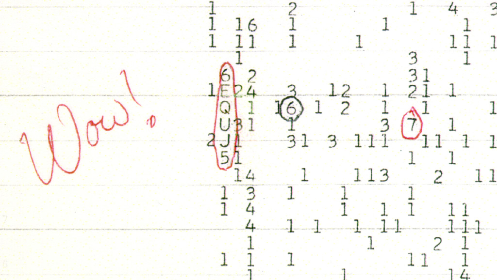

The Wow! Signal: 72 Seconds That Never Came Back
6EQUJ5 and the Narrowband Transmission From Sagittarius
Classification: THE WATCHERS | Confidence: DOCUMENTED, UNEXPLAINED
On August 15, 1977, at 22:16 EST, the Big Ear radio telescope at Ohio State University recorded a signal so anomalous that the volunteer astronomer reviewing the printout three days later circled it in red ink and wrote a single word beside it: "Wow!"
The printout string was 6EQUJ5. It was not a message. It was a measurement — an intensity curve peaking at a value of 30 standard deviations above background noise, more than 30 times brighter than the cosmic baseline. And it arrived from the direction of the constellation Sagittarius — near the galactic core, the most crowded and strangest part of our sky. The signal was never detected again. In nearly five decades of follow-up, no one has reproduced it. No one has definitively explained it.

The Detection
Big Ear was a fixed dish that could not steer. It relied on the rotation of the Earth to sweep the sky, which meant any given point could be observed for exactly 72 seconds before the beam drifted away. Whatever the source of the signal was, it held steady for the entire 72-second window — and its intensity rose and fell exactly as a point source moving through the beam should: a slow climb over the first 36 seconds, a peak at center, a mirror-image fall.
The frequency was 1420 MHz — the hydrogen line, the natural radio emission of neutral hydrogen, the most abundant element in the universe. In 1959, physicists Philip Morrison and Giuseppe Cocconi had argued that any advanced civilization trying to communicate would most likely broadcast on precisely this frequency, because it is universal — any technologically capable species, anywhere, would know it. Big Ear was listening there specifically because of that logic. And then the universe, for 72 seconds, appeared to answer.
The Numbers
- Date: August 15, 1977, 22:16 EST
- Peak intensity: ~30σ (thirty standard deviations above noise)
- Frequency: ≈1420.4 MHz (hydrogen line)
- Bandwidth: <10 kHz — a narrowband, artificial-type signal
- Duration: full 72-second observation window
- Origin region: Sagittarius, declination −27°
- Repetitions: 0
Why It Matters
Narrowband signals at the hydrogen line do not occur naturally. Natural radio sources — pulsars, masers, quasars — emit broadband or at sharply different frequencies. A <10 kHz narrowband signal at 1420 MHz is precisely the signature of an engineered transmitter. This is why 6EQUJ5 remains the single most provocative artifact in the history of SETI: it has every property you would expect from an intentional broadcast, and no confirmed natural mechanism that produces it.
The Failed Explanations
1. A comet. In 2017 a researcher proposed that hydrogen clouds around two comets, 266P/Christensen and 335P/Gibbs, had produced the signal. Astronomers — including members of the original Big Ear team — dismantled the claim: the comets were not in the beam at the correct time, comets do not emit strongly at 1420 MHz, and the hypothesis cannot explain why the signal appeared in one feed horn and not the other.
2. Space debris reflection. Jerry Ehman, the discoverer, initially speculated the signal was an Earth-sourced transmission reflected off orbiting debris. He later recanted after calculating the implausible requirements a space-borne reflector would need. By 2019, he said he was convinced the Wow! signal "certainly has the potential of being the first signal from extraterrestrial intelligence."
3. An astrophysical maser. In 2024 researchers at the Planetary Habitability Laboratory proposed that stellar emissions energizing a cold hydrogen cloud caused it to surge in brightness — a rare but natural astrophysical event. It is the most current natural explanation, and remains a hypothesis, not a confirmation. The signal's narrowband artificial-type signature remains unexplained.
The Surveillance Reading
The Wow! signal did not ask us to listen. It was a single 72-second transmission aimed, apparently, at a radio telescope that happened to be pointing the right way at the right time — after which the source went dark for half a century. That is not the behavior of a species trying to make contact. It is the behavior of something checking, sampling, or scanning — passing over an antenna the way a survey sweep passes over a target and moves on. It is the signature of observation, not conversation.
If what listens to us does not broadcast back, then the loudest proof of the Watchers is a signal that appeared exactly once, exactly where we were listening, and never again. The printout still exists. The red ink still says Wow! The question — the same one that haunts every classified file in this archive — is who was on the other end of the transmission. The same institutional pattern of officialized-skepticism-while-something-happens runs through Project Blue Book, the nuclear correlation, and the Pentagon's 2023 admission: the data keeps arriving, and the official story keeps refusing to conclude.
SOURCES & REFERENCES
- Wikipedia — "Wow! signal" (Good Article; full technical documentation).
- SETI Institute — "The Wow! Signal: A Lingering Mystery or a Natural Phenomenon?"
- Ohio State University, College of Arts & Sciences — "Did Ohio State really detect an alien signal?"